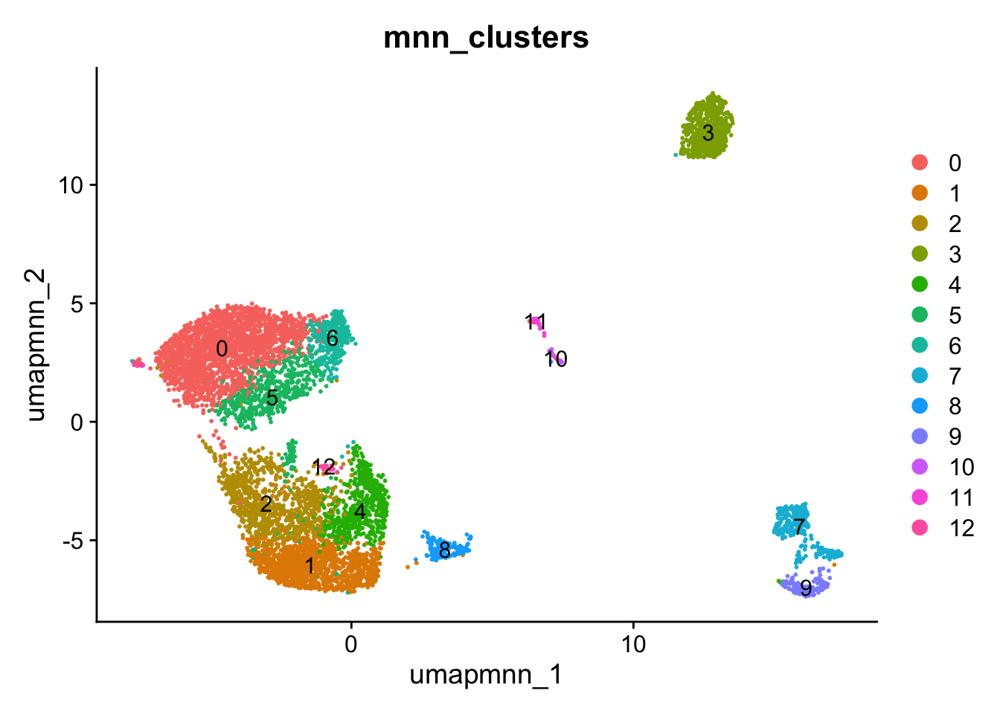
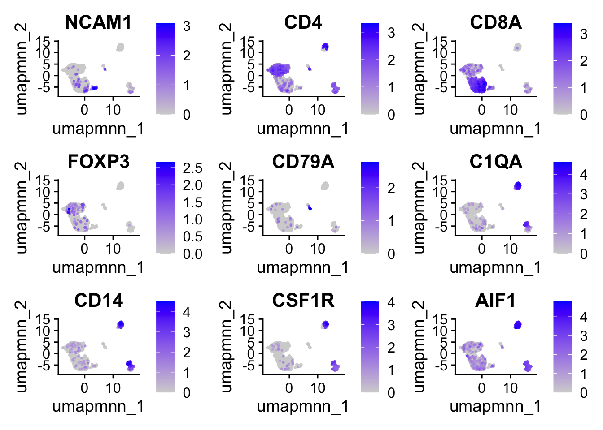
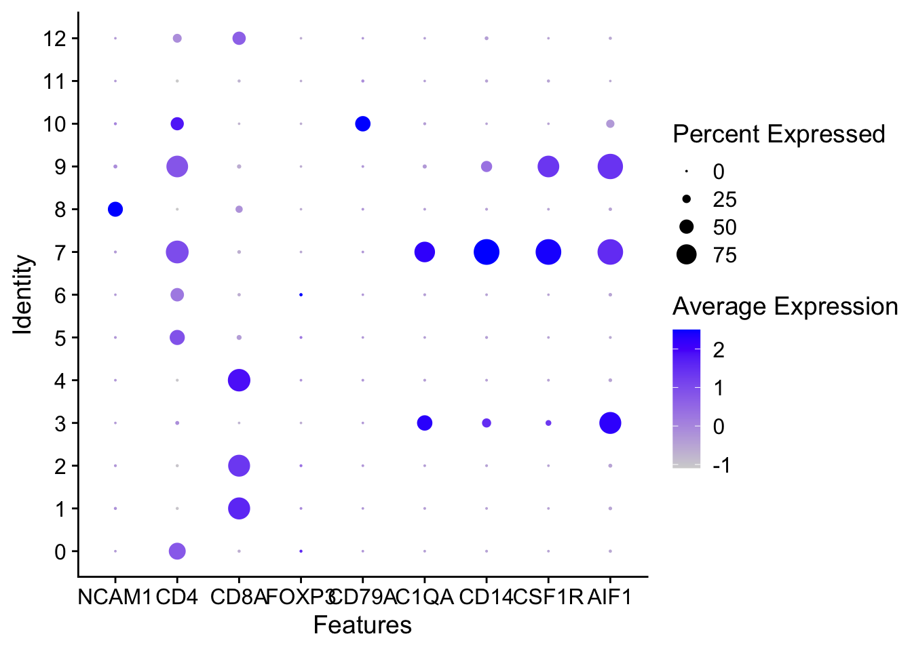

An object of class Seurat
36606 features across 7415 samples within 1 assay
Active assay: RNA (36606 features, 3000 variable features)
9 layers present: counts.BBB2005, counts.BBB2020, counts.BBB2166, counts.BBB2185, data.BBB2005, data.BBB2020, data.BBB2166, data.BBB2185, scale.data
2 dimensional reductions calculated: pca, umap.unintegrated5. Fast MNN Integration
FastMNNIntegration
set.seed(123)
FinalFilter <- NormalizeData(FinalFilter)Normalizing layer: counts.BBB2005Normalizing layer: counts.BBB2020Normalizing layer: counts.BBB2166Normalizing layer: counts.BBB2185FinalFilter <- FindVariableFeatures(FinalFilter)Finding variable features for layer counts.BBB2005Finding variable features for layer counts.BBB2020Finding variable features for layer counts.BBB2166Finding variable features for layer counts.BBB2185FinalFilter <- ScaleData(FinalFilter)Centering and scaling data matrixWarning: Different features in new layer data than already exists for
scale.dataFinalFilter <- RunPCA(FinalFilter)PC_ 1
Positive: TRBC2, CRIP1, IL7R, INPP4B, THEMIS, GZMA, CCL5, LTB, CAMK4, GZMK
PYHIN1, TRBC1, ANK3, LINC01934, NKG7, CTSW, CD8A, LINC01871, CBLB, CD8B
CD69, MYBL1, KLRK1, HOPX, KLRG1, KLRB1, DUSP2, LEF1, PPP2R2B, TGFBR3
Negative: PLXDC2, SLC8A1, RBM47, CD86, FGD4, LRMDA, MEF2C, UBE2E2, CSF2RA, TLR2
ARHGAP24, MARCH1, CLEC7A, LYZ, LYN, CYBB, DOCK4, FCGR2A, RTN1, IRAK3
MAML3, IFI30, SYK, ATP8B4, MS4A6A, CSF1R, RAB31, ARHGAP22, CSF3R, LPCAT2
PC_ 2
Positive: FTL, FTH1, TPT1, AIF1, APOE, C1QA, C1QC, C1QB, HLA-DRA, APOC1
HLA-DPB1, TYROBP, CST3, HLA-DPA1, TUBA1B, TMSB10, MARCKS, MARCO, SELENOP, HAMP
F13A1, FSCN1, CD74, IFITM3, IL18, CALHM6, NME2, SCIN, FCER1G, AL031056.1
Negative: MALAT1, ARHGAP15, RABGAP1L, FOXP1, DOCK10, DPYD, FOXN3, THEMIS, CBLB, RUNX1
INPP4B, DOCK8, ELMO1, SSH2, CAMK4, NEAT1, TBC1D5, LINC01934, DLEU2, MAML2
ARL15, ANK3, MBD5, PYHIN1, TAOK3, SMYD3, TCF12, MED13L, GLCCI1, SPIDR
PC_ 3
Positive: SLC11A1, C5AR1, LYVE1, ARHGAP6, FCGBP, STARD13, SLC2A5, CD14, CXADR, COLEC12
SH3RF3, CYP27A1, C1QB, C1QC, DOCK4, C1QA, RNF150, LINC02798, STAB1, NAV2
DRAM1, SAMD4A, CTTNBP2, AL163541.1, ARHGEF10L, EPB41L3, FCGR3A, SELENOP, NEAT1, SLC1A3
Negative: FLT3, BCL11A, P2RY14, AFF3, FCER1A, CD1C, SCN9A, MYCL, RHEX, CLEC4C
SPIB, TLR10, GAPT, MPEG1, CD1E, FAM160A1, WDFY4, PLD4, NIBAN3, IRF8
DACH1, SEMA3C, COBLL1, CCSER1, DNASE1L3, JCHAIN, MYO1E, AC007381.1, NEGR1, LILRA4
PC_ 4
Positive: LTB, MAL, IL7R, SERINC5, FRY, AC139720.1, CD4, PRKCA, CD40LG, LEF1
TPT1, BCL2, MAP3K1, TSHZ2, TIMP1, ITGB1, ADAM19, BACH2, FAAH2, KLRB1
CCR7, INPP4B, GNAQ, MAST4, LIMS1, SELL, NFKB1, PVT1, TNF, CSGALNACT1
Negative: NKG7, CCL5, CCL4, KLRK1, AOAH, GZMA, CD8A, GZMK, GZMH, CD8B
KLRD1, XCL2, CTSW, CMC1, PLEK, CCL4L2, C1orf21, ARHGAP26, PPP2R2B, LINC01871
DTHD1, TRGC2, CD160, PYHIN1, TOX, SFMBT2, ZEB2, HLA-DRB1, PDGFD, HLA-DPB1
PC_ 5
Positive: NRP1, LINC01374, EPHB1, COBLL1, NIBAN3, RUBCNL, IRF8, JCHAIN, GZMB, RHEX
LILRA4, PLXNA4, CUX2, PTPRS, COL26A1, TSPAN13, CLEC4C, TPM2, LINC01478, BX284613.2
COL24A1, LRRC26, ZFAT, LAMP5, SPIB, AC007381.1, TCF4, SCT, LINC00996, CMKLR1
Negative: CD1C, FCER1A, CD1E, CD1D, RTN1, CLEC10A, FCN1, LGALS2, VCAN, CD300E
AC092546.1, IL1R2, GPAT3, ST18, MNDA, CACNA2D3, CREB5, CPVL, PKIB, S100Z
AL138899.1, FPR3, IRAK3, MS4A4E, FGL2, S100A4, S100A10, CD300LF, S100A6, BASP1 FinalFilter <- IntegrateLayers(object = FinalFilter,
method = FastMNNIntegration,
orig.reduction = "pca",
new.reduction = "mnn", verbose = TRUE)Converting layers to SingleCellExperimentRunning fastMNNWarning: Layer counts isn't present in the assay object; returning NULL#Visualize and cluster
FinalFilter <- FindNeighbors(FinalFilter, reduction = "mnn", dims = 1:40)Computing nearest neighbor graphComputing SNNFinalFilter <- FindClusters(FinalFilter, resolution = 0.5, cluster.name = "mnn_clusters")Modularity Optimizer version 1.3.0 by Ludo Waltman and Nees Jan van Eck
Number of nodes: 7415
Number of edges: 297066
Running Louvain algorithm...
Maximum modularity in 10 random starts: 0.8657
Number of communities: 13
Elapsed time: 0 secondsFinalFilter <- RunUMAP(FinalFilter, reduction = "mnn", dims = 1:40, reduction.name = "umap.mnn")Warning: The default method for RunUMAP has changed from calling Python UMAP via reticulate to the R-native UWOT using the cosine metric
To use Python UMAP via reticulate, set umap.method to 'umap-learn' and metric to 'correlation'
This message will be shown once per session16:11:35 UMAP embedding parameters a = 0.9922 b = 1.11216:11:35 Read 7415 rows and found 40 numeric columns16:11:35 Using Annoy for neighbor search, n_neighbors = 3016:11:35 Building Annoy index with metric = cosine, n_trees = 500% 10 20 30 40 50 60 70 80 90 100%[----|----|----|----|----|----|----|----|----|----|**************************************************|
16:11:35 Writing NN index file to temp file /var/folders/tp/z4kv_q0d5j98lblm0rx44pl40000gr/T//RtmpfSPIZX/file673d277a4e60
16:11:35 Searching Annoy index using 1 thread, search_k = 3000
16:11:36 Annoy recall = 100%
16:11:37 Commencing smooth kNN distance calibration using 1 thread with target n_neighbors = 30
16:11:37 Initializing from normalized Laplacian + noise (using RSpectra)
16:11:37 Commencing optimization for 500 epochs, with 326072 positive edges
16:11:43 Optimization finishedDimPlot(FinalFilter, reduction = "umap.mnn", group.by = "mnn_clusters", label = T)
ggsave("plots/2.FastMNN/umap_mnn.jpg", width = 5, height = 5)
GOI <- c("NCAM1", "CD4", "CD8A", "FOXP3", "CD79A","C1QA","CD14", "CSF1R", "AIF1")
FeaturePlot(FinalFilter, features = GOI, order = T, reduction = "umap.mnn")
ggsave("plots/2.FastMNN/umap_mnn_types.jpg", width = 10, height = 10)
DotPlot(FinalFilter, features = GOI)
ggsave("plots/2.FastMNN/dot_mnn_types.jpg", width = 10, height = 10)
save(FinalFilter, file="data/6.MNN.rda")sessionInfo()R version 4.4.1 (2024-06-14)
Platform: aarch64-apple-darwin20
Running under: macOS Sonoma 14.5
Matrix products: default
BLAS: /Library/Frameworks/R.framework/Versions/4.4-arm64/Resources/lib/libRblas.0.dylib
LAPACK: /Library/Frameworks/R.framework/Versions/4.4-arm64/Resources/lib/libRlapack.dylib; LAPACK version 3.12.0
locale:
[1] en_US.UTF-8/en_US.UTF-8/en_US.UTF-8/C/en_US.UTF-8/en_US.UTF-8
time zone: America/Chicago
tzcode source: internal
attached base packages:
[1] stats graphics grDevices utils datasets methods base
other attached packages:
[1] future_1.49.0 SeuratWrappers_0.3.5 ggplot2_3.5.2
[4] Seurat_5.2.1 SeuratObject_5.0.2 sp_2.1-4
loaded via a namespace (and not attached):
[1] RColorBrewer_1.1-3 rstudioapi_0.17.1
[3] jsonlite_2.0.0 magrittr_2.0.3
[5] spatstat.utils_3.1-2 farver_2.1.2
[7] rmarkdown_2.29 ragg_1.3.3
[9] zlibbioc_1.50.0 vctrs_0.6.5
[11] ROCR_1.0-11 DelayedMatrixStats_1.26.0
[13] spatstat.explore_3.3-4 S4Arrays_1.4.1
[15] htmltools_0.5.8.1 BiocNeighbors_1.22.0
[17] SparseArray_1.4.8 sctransform_0.4.1
[19] parallelly_1.45.0 KernSmooth_2.23-26
[21] htmlwidgets_1.6.4 ica_1.0-3
[23] plyr_1.8.9 plotly_4.10.4
[25] zoo_1.8-12 ResidualMatrix_1.14.1
[27] igraph_2.1.4 mime_0.13
[29] lifecycle_1.0.4 pkgconfig_2.0.3
[31] rsvd_1.0.5 Matrix_1.7-2
[33] R6_2.6.1 fastmap_1.2.0
[35] GenomeInfoDbData_1.2.12 MatrixGenerics_1.16.0
[37] fitdistrplus_1.2-2 shiny_1.10.0
[39] digest_0.6.37 colorspace_2.1-1
[41] patchwork_1.3.0 S4Vectors_0.42.1
[43] tensor_1.5 RSpectra_0.16-2
[45] irlba_2.3.5.1 textshaping_1.0.0
[47] GenomicRanges_1.56.2 beachmat_2.20.0
[49] labeling_0.4.3 progressr_0.15.1
[51] spatstat.sparse_3.1-0 httr_1.4.7
[53] polyclip_1.10-7 abind_1.4-8
[55] compiler_4.4.1 remotes_2.5.0
[57] withr_3.0.2 BiocParallel_1.38.0
[59] fastDummies_1.7.5 R.utils_2.12.3
[61] MASS_7.3-64 DelayedArray_0.30.1
[63] tools_4.4.1 lmtest_0.9-40
[65] httpuv_1.6.16 future.apply_1.11.3
[67] goftest_1.2-3 R.oo_1.27.0
[69] glue_1.8.0 batchelor_1.20.0
[71] nlme_3.1-167 promises_1.3.3
[73] grid_4.4.1 Rtsne_0.17
[75] cluster_2.1.8 reshape2_1.4.4
[77] generics_0.1.3 gtable_0.3.6
[79] spatstat.data_3.1-4 R.methodsS3_1.8.2
[81] tidyr_1.3.1 data.table_1.17.0
[83] ScaledMatrix_1.12.0 XVector_0.44.0
[85] BiocSingular_1.20.0 BiocGenerics_0.50.0
[87] spatstat.geom_3.3-5 RcppAnnoy_0.0.22
[89] ggrepel_0.9.6 RANN_2.6.2
[91] pillar_1.10.1 stringr_1.5.1
[93] spam_2.11-1 RcppHNSW_0.6.0
[95] later_1.4.2 splines_4.4.1
[97] dplyr_1.1.4 lattice_0.22-6
[99] survival_3.8-3 deldir_2.0-4
[101] tidyselect_1.2.1 SingleCellExperiment_1.26.0
[103] scuttle_1.14.0 miniUI_0.1.1.1
[105] pbapply_1.7-2 knitr_1.50
[107] gridExtra_2.3 IRanges_2.38.1
[109] SummarizedExperiment_1.34.0 scattermore_1.2
[111] stats4_4.4.1 xfun_0.52
[113] Biobase_2.64.0 matrixStats_1.5.0
[115] UCSC.utils_1.0.0 stringi_1.8.4
[117] lazyeval_0.2.2 yaml_2.3.10
[119] evaluate_1.0.4 codetools_0.2-20
[121] tibble_3.2.1 BiocManager_1.30.25
[123] cli_3.6.5 uwot_0.2.2
[125] systemfonts_1.2.1 xtable_1.8-4
[127] reticulate_1.42.0 munsell_0.5.1
[129] GenomeInfoDb_1.40.1 Rcpp_1.0.14
[131] globals_0.18.0 spatstat.random_3.3-2
[133] png_0.1-8 spatstat.univar_3.1-1
[135] parallel_4.4.1 dotCall64_1.2
[137] sparseMatrixStats_1.16.0 listenv_0.9.1
[139] viridisLite_0.4.2 scales_1.3.0
[141] ggridges_0.5.6 crayon_1.5.3
[143] purrr_1.0.4 rlang_1.1.6
[145] cowplot_1.1.3